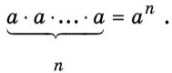

Оглавление
- Запись натуральных чисел
- Арифметические действия над натуральными числами
- Деление с остатком
- Разложение натурального числа на простые множители
- Наибольший общий делитель нескольких натуральных чисел(НОД)
- Наименьшее общее кратное нескольких натуральных чисел(НОК)
- Признаки делимости
- Употребление букв в алгебре. Переменные
Запись натуральных чисел
Числа 1, 2, 3, 4, ..., использующиеся для счёта предметов или для указания порядкового номера того или иного предмета среди однородных предметов, называются натуральными. Любое натуральное число в десятичной системе счисления записывается с помощью цифр 0,1,2,3,4,5,6,7,8,9. Например, запись 2457 означает, что 2-цифра тысяч, 4-цифра сотен,
5-цифра десятков и 7-цифра единиц, т.е.
Вообще, если a-цифра тысяч, b-цифра сотен, c-цифра десятков, d-цифра единиц,то имеем
Арифметические действия над натуральными числами
Результатом сложения или умножения двух натуральных чисел всегда является натуральное число:если m,n- натуральные числа, то p=m+n также натуральное число, m и n- слагаемые, p=mn также натуральное число, m,n-множители, p-произведение.
Справедливы следующие свойства:
- a+b=b+a -переместительное свойство сложения
- (a+b)+c=a+(b+c) -сочетательное свойство сложения
- ab=ba -переместительное свойство умножения
- (ab)c=a(bc) -сочетательное свойство умножения
- a(b+c)=ab+ac -распределительное свойство умножения относительно сложения
В результате вычитания или деления натуральных чисел не всегда получается натуральное число. Если m,n,k -натуральные числа, то при m-n=k говорят, что m -уменьшаемое, n -вычитаемое, k -разность; при m:n=k говорят, что m -делимое, n -делитель, k -частное; число m называется также кратным числа n, а число n -делителем числа m. Если m -кратное числа n, то существует натуральное число k такое, что m=kn.
Из чисел с помощью знаков арифметических действий и скобок составляют числовые выражения. Если в числовом выражении выполнить указанные действия, то получится число, которое называется значением выражения.
Напомним порядок арифметических действий в числовом выражении: прежде всего выполняют действия в скобках; внутри любых скобок сначала выполняют умножение и деление, а затем сложение и вычитание. Например, если нужно найти значение выраженя
то порядок действий таков:
Деление с остатком
Если натуральное число m не делится на натуральное число n, т.е. не существует такого натурального числа k, что m=nk, то рассматривают деление с остатком. Например, при делении числа 43 на число 18 в частном получается 2 и в остатке 7, т.е. 43=18*2+7. В общем случае, если m- делимое, n- делитель (m>n), p- частное и r- остаток, то
где r < n. Здесь m, n, p, r- натуральные числа (исключение составляет случай, когда m делится на n без остатка и r=0). Например, если n=3, а r=2 то m=3pp+2. Это формула чисел, которые при делении на 3 дают в остатке 2.
Пример. Найти частное и остаток от деления числа 36 421 на число 25.
- Выполним деление "углом":
Итак, частное 1456, а остаток 21. Воспользовавшись равенством (1), можем записать:
Заметим, что этот пример можно решить и по-другому, не используя деление "углом", а непосредственно используя формулу (1). Имеем 36 421= 36 400+21= 25*1456+ 21. Значит, 1456- частное, а 21- остаток.
Разложение натурального числа на простые множители.
Если число имеет только два делителя- само себя и единицу, то оно называется простым; если число имеет более двух делителей, то оно называется составным; число 1 не относится ни к простым, ни к составным. Так, число 37 простое, оно имеет только два делителя: 1 и 37; число 36 составное, оно имеет более двух делителей: 1, 2, 3, 4, 6, 9, 12, 18, 36. Простое число 37 можно представить в виде произведения двух натуральных чисел только одним способом (если не учитывать порядок множителей): 37=1*37; составное число 36 можно представить в виде произведения двух натуральных чисел более чем одним способом: 36=1*36=2*18=3*12 и т.д. Однако в виде произведения простых множителуй составное число 36 можно представить только одним способом: 36=2*2*3*3.
- Любое составное число можно разложить на простые множители, причём только одним способом.
Если в разложении числа на простые множители один и тот же множитель a встречается n раз, то записывают кратко: Выражение an называют степенью,a-основание степени, n-показателем степени.
- Поэтому можно записать:36=2*2*3*3=22*32
Наибольший общий делитель нескольких натуральных чисел.
Пусть даны числа 72 и 96. Выпишем все делители числа 72:
Выпишем все делители числа 96:
Среди выписанных чисел есть одинаковые:
Все эти числа называют общими делителями чисел 72 и 96, а наибольшее из них- наибольщим общим делителем.
Для любых заданных натуральных чисел a и b можно найти наибольший общий делитель. Он обозначается D(a,b)(читается:"D от a,b").Если числа a и b таковы, что D(a,b)=1, то они называются взаимно простыми.
Например, взаимно простыми являются числа 72 и 35 (хотя каждое из них- составное число)
Чтобы найти наибольший общий делитель нескольких чисел, надо разложить эти числа на простые множители и найти произведение общих простых множителей, взяв каждый из них с наитменьшим (из имеющихся) показателем.
Пример. Найти D(3780,7056).
Имеем 3780=22*33*5*7, 7056=24*32*72.
Тогда D(3780,7056)=22*32*7=252; взяты те простые множители, которые входят и в разложение числа 3780, и в разложение числа 7056.
Наименьшее общее кратное нескольких натуральных чисел.
Пусть даны два числа 12 и 18. Выпишем несколько чисел, кратных числу 12:
Выпишем числа, кратные 18:
Среди выписанных чисел есть одинаковые:
Такие числа называют общими кратными чисел 12 и 18, а наименьшее из них (число 36)- наименьшим общим кратным.
Аналогично определяется наименьшее общее кратное произвольных чисел a и b. Оно обозначается K(a,b)
(читается:"K от a,b"). Любое общее кратное чисел a и b делится на K(a,b).
Пример. Найти K(3780,7056).
Имеем 3780=22*3
Для любых натуральных чисел a и b справедливо равенство
Если, в частности, числа a и b взаимно простые, т.е. D (a,b)=1, то K (a,b)=a*b. Это значит, что наименьшее общее кратное двух взаимно простых чисел равно произведению этих чисел.
Признаки делимости.
В некоторых случаях, не выполняя деления натурального числа n на натуральное число a, можно ответить на вопрос, делится ли n на a без остатка или нет. Это достигается с помощью различных признаков делимости.
Иногда удобно пользоваться сокращённой записью na, означающей, что натуральное число n делится на натуральное число a (без остатка).
- Если в сумме натуральных чисел каждое слагаемое делится на натуральное число a, то и вся сумма делится на число a (теорема о делимости суммы).
Кратко это можно записать так:
Однако не следует считать, что если каждое слагаемое суммы не делится на какое-то число, то и сумма не делится на это число. Например, сумма 37+19 делится на 4, хотя ни 37, ни 19 не являются кратными числа 4. Вместе с тем, заметим, что если все слагаемые, кроме одного, делятся на некоторое число, то сумма не делится на это число.
- Если в произведении хотя бы один из множителей делится на некоторое число, то и произведение делится на это число (теорема о делимости произведения).
Например, не выполняя умножения, можно утверждать, что произведение 105*48*93*54 делится на 5, так как 105 делится на 5.
- Натуральное число делится на 2 тогда и только тогда, когда его последняя цифра делится на 2.
- Натуральное число делится на 5 тогда и только тогда, когда его последняя цифра либо 0, либо 5.
- Натуральное число делится на 10 тогда и только тогда, когда его последняя цифра 0.
- Натуральное число, содержащее не менее трёх цифр, делится на 4 тогда и только тогда, когда делится на 4 двузначное число, образованное последними двумя цифрами заданного числа.
- Натуральное число, содержащее не менее тррёх цифр, делится на 25 тогда и только тогда, когда делится на 25 двузначное число, образованное последними двумя цифрами заданного числа.
- Натуральное число делится на 3 тогда и только тогда, когда сумма его цифр делится на 3.
- Натуральное число делится на 9 тогда и только тогда, когда сумма его цифр делится на 9.
- Если натуральное число n имеет своими делителями числа a и b, то оно делится и на их наименьшее кратное.
Например, 4724 делится на 4, так как двузначное число 24 делится на 4; 4318 не делится на 4, поскольку двузначное число 18 не делится на 4.
Например, 27 426 делится на 3, поскольку сумма его цифр, т.е. число 21, делится на 3. В то же время 17 945 не делится на 3, так как сумма его цифр, т.е. число 26, не делится на 3.
Пример. Не выполняя деления, установить, делится ли 26 775 на 225.
Найдём сумму цифр числа 26 775. Она равна 27. Так как 279, то по признаку делимости на 9 и 26 7759. Далее, так как 7525 то по признаку делимости на 25 и 26 77525. Наконец, так как числа 9 и 25 взаимно простые, то K(9,25)=9*25=225, а по признаку №8 заданное число 26 775 делится на K(a,b) т.е. на 225.
Употребление букв в алгебре. Переменные.
В алгебре часто конкретные свойства чисел записывают с помощью букв. Например, переместительное свойство сложения записывается так: a+b=b+a, где вместо a и b можно подставить любые числа. Число, подставляемое вместо буквы называют её значением. В некоторых случаях (например, в уравнениях) вместо буквы можно подставить только определённые числа, чтобы написанное равенство было верным. Например, 7+x+10 обращается в верное равенство лишь при x=3. Употребляемые в алгебре буквы называют переменными; смысл такого названия состоит в том, что числовое значение буквы можно изменить: например, в равенстве a+b=b+a можно положить a=3,b=5, а можно a=7, b=19 и т.д. - во всех случаях равенство будет верно. В равенстве 7+x=10 можно положить x=3, а можно x=5; разница в том, что в первом случае получается верное числовое равенство, а во втором- неверное.